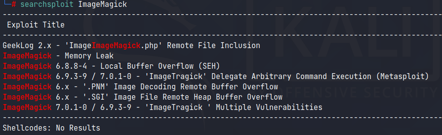
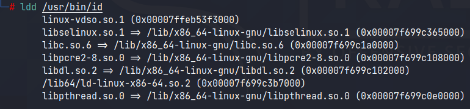
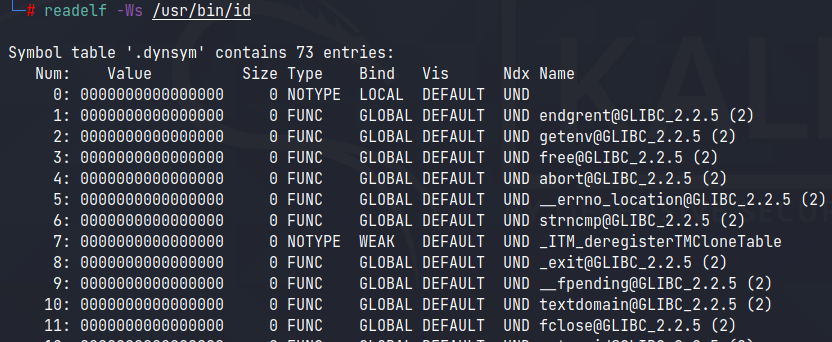
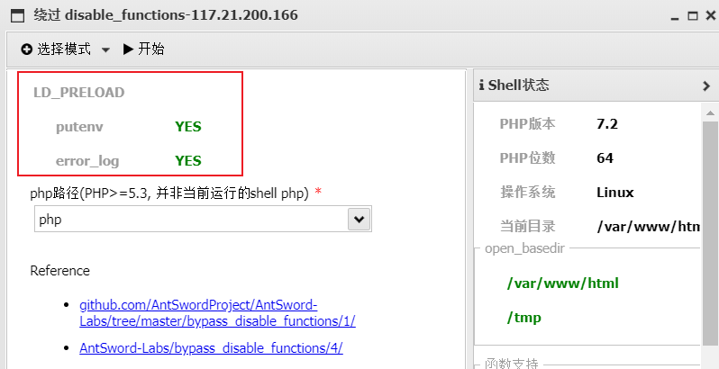

前言
具体原理会贴连接，此文主要是记录下基本操作，便于日后做题。
命令不可执行原因
通常来说，导致 webshell 不能执行命令的原因大概有三类：
1.php.ini 中用 disable_functions 指示器禁用了 system()、exec() 等等这类命令执行的相关函数；
2.web 进程运行在 rbash 这类受限 shell 环境中；
3.WAF拦截。若是一则无法执行任何命令，若是二、三则可以执行少量命令。
正文
disable_functions的四种bypass法
1.攻击后端组件，寻找存在命令注入的、web应用常用的后端组件，如，ImageMagick的魔图漏洞、bash的破壳漏洞；
2.寻找未禁用的漏网函数，常见的执行命令的函数有system()、exec()、shell_exec()、passthru()，偏僻的 popen()、proc_open()、pcntl_exec()，逐一尝试，或许有漏网之鱼；
3.mod_cgi 模式，尝试修改.htaccess，调整请求访问路由，绕过php.ini中的任何限制；
4.利用环境变量LD_PRELOAD 劫持系统函数，让外部程序加载恶意 *.so，达到执行系统命令的效果。
在此记录下bypass的一般操作
攻击后端组件
在phpinfo()中查看组件版本，例如ImageMagick
然后用searchsploit搜索相关poc并加以利用。

TODO：找个例题实际操作下
利用LD_PRELOAD
设想这样一种思路：利用漏洞控制web启动新进程a.bin即便进程名无法让我随意指定),a.bin内部调用系统函数b()，b()位于系统共享对象c.so中，所以系统为该进程加载共c.so，我想法在c.so前优先加载可控的c_evil.so，c_evil.so内含与 b()同名的恶意函数，由于c_evil.so优先级较高，所以，a.bin将调用到c_evil.so内b()而非系统的c.so内b()，同时，c_evil.so可控，达到执行恶意代码的目的。基于这一思路，将突破disable_functions限制执行操作系统命令这一目标，大致分解成几步在本地推演：查看进程调用系统函数明细、操作系统环境下劫持系统函数注入代码、找寻内部启动新进程的 PHP函数、PHP环境下劫持系统函数注入代码。
查看系统加载的共享对象ldd /usr/bin/id

由于可执行文件/usr/bin/id内含符号表,所以，运行nm -D /usr/bin/id 2>&1或readelf -Ws /usr/bin/id可查看该程序可能调用的系统 API 明细：

strace -f /usr/bin/id 2>&1 跟踪命令/usr/bin/id实际API调用情况
操作系统环境下劫持系统函数注入代码。linux的环境变量LD_PRELOAD是一种类似win32 API hook的更优雅的实现，适用于打热补丁、读取进程空间数据、禁止程序调用指定 API、调试程序等等场景，甚至可以在不更改原始可执行文件前提下植入后门(管理员常用的/bin/ps)
原理
具体见：无需sendmail：巧用LD_PRELOAD突破disable_functions
2021年7月17日20:47:31：强烈推荐阅读，内容详尽，对小白十分友好，看的时候直呼过瘾，看完后用手上的题验证所想，内心真的很激动。
个人总结
首先找到一个特殊PHP函数，要求是这个函数执行会调用两次execve，第一次是启动PHP解释器，第二次是启动一个新进程。利用第二次execve启动外部程序。
然后找到__attribute__，这个C语言扩展修饰符在加载共享对象的时候就会执行里面的代码，于是写入恶意代码将原来的正常代码给覆盖了，生成evil.so文件。
之后利用putenv()将LD_PRELOAD变量指向为自己的evil.so文件，也是利用putenv()将想要执行的代码放到系统变量。
逻辑如下：打入payload，恶意代码被写入到系统变量->执行特殊PHP函数->第一次execve启动PHP解释器，第二次execve启动新进程->新进程重新加载共享文件，evil.so被加载->触发自己写入的__attribute__->__attribute__中有system()，恶意代码在系统变量中，于是system('恶意代码')
而这个特殊PHP函数如下：
//以下三个可以一起放着，函数被禁用也不需要注释，不影响
mail("", "", "", "");
error_log("a", 1);
mb_send_mail("", "", "");
//以下两个没有则需要注释掉，否则无法正常执行
// $img = Imagick("1.mp4"); //如果有ImageMagick这个扩展(文件必须存在)
// imap_mail("", "", ""); //需要安装imap拓展具体题目可见刷题笔记:[SUCTF 2019]EasyWeb
蚁剑实操

然后创建副本(密码与原来的shell密码相同)，用蚁剑连接/.antproxy.php
![刷题笔记:[HarekazeCTF2019]encode_and_encode](/medias/featureimages/68.jpg)
![[CTFSHOW]命令执行合集](/medias/featureimages/53.jpg)